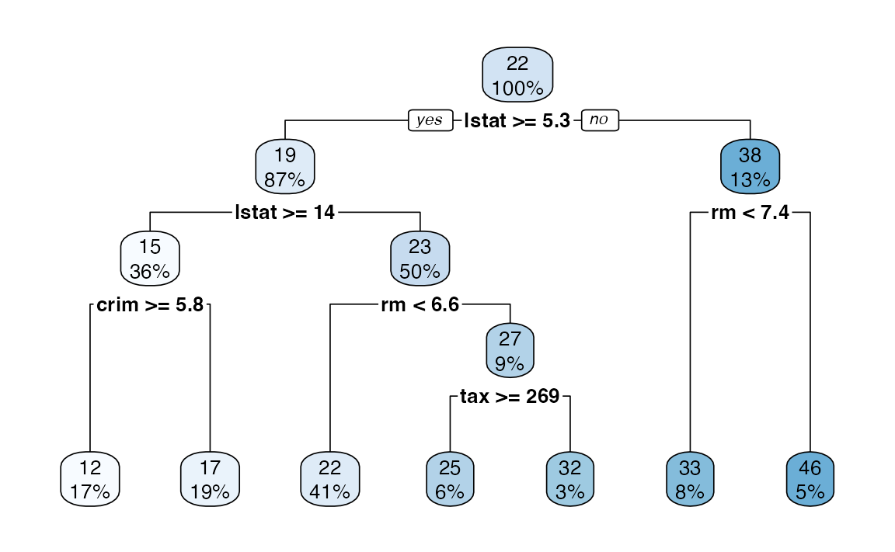
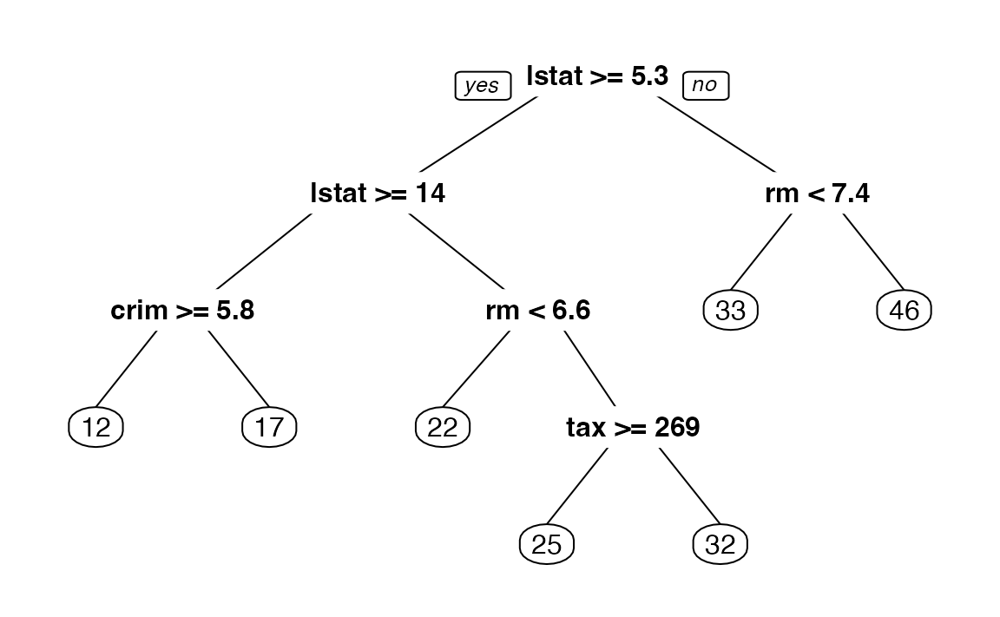
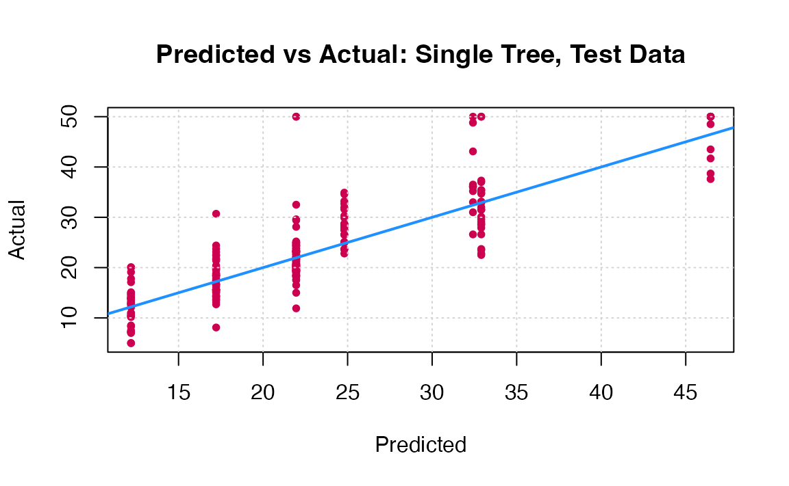
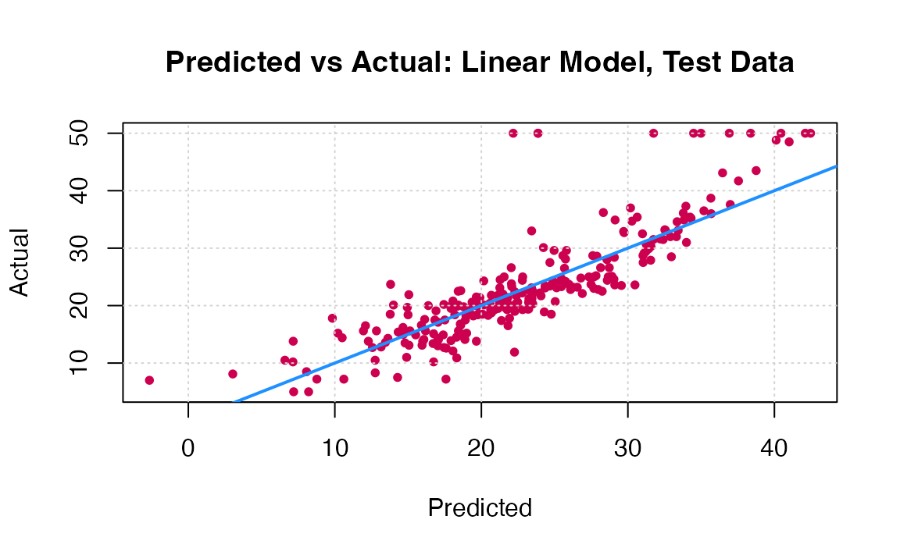

PW 5
In this practical work, we will build some decision trees for both regression and classification problems. Note that there are many packages to do this in . The tree package is the basic package to do so, while the rpart17 package seems more widely suggested and provides better plotting features. So we will use the rpart package.
It is recommended for correct and better using of functions that you consult their documentations. Every function is well documented indeed. You can do so by writing ?function_name or help(function_name)in the console.
Especially for functions with multiple use, for example, glm() is a function that fits generalizes linear models, one of them is logistic regression when type = "binomial".
Another example, is the function predict(), that is a generic function for predictions from the results of various model fitting functions. Its first argument is a object, a model, and the rest of the arguments depends on the nature of the object. If you want to consult the documentation about using predict() for a tree built with rpart(), do ?predict.rpart or help(predict.rpart)
If you want to run a function from a certain package without loading the package, you can write package::function(). For example MASS::lda() or rpart::rpart(). It is also helpful to remember the name of the package in which the function is defined.
Regression Trees
Single tree
To demonstrate regression trees, we will use the Boston dataset that we used during the first two practical works, from the MASS package. Recall that medv is the response.
1. Load the Boston dataset from MASS package. Split the dataset randomly in half.
library(MASS)
library(caTools)
set.seed(18)
Boston_idx = sample(1:nrow(Boston), nrow(Boston) / 2)
# You don't know what we just did?
# open the documentation of the function sample by
# writing ?sample in the R console.
# Note that this is one of the ways to split it randomly and it is not necessary the best.
Boston_train = Boston[Boston_idx,]
Boston_test = Boston[-Boston_idx,]2. Fit a regression tree to the training data using the rpart() function from the rpart package. Name the tree Boston_tree.
3. Plot the obtained tree using the following code.
4. A better plot can be obtained using the rpart.plot18 package. Re-plot the tree using it. You can use the rpart.plot() function which by default, when the output is continuous, each node shows: the predicted value, and the percentage of observations in the node. You can also use the prp() function.

5. Print the obtained tree and print its summary. Between the things that you can see in the summary, the CP (complexity parameter) table and the importance of each variable in the model. Print the CP table using the printcp() function to see the cross validation results. Plot a comparison figure using the plotcp() function.
You will notice the obtained tree is pruned. This is because rpart prunes the tree by default by performing 10-fold cross-validation.
rpart keeps track of something called the complexity of a tree. The complexity measure is a combination of the size of a tree and the ability of the tree to separate the classes of the target variable. If the next best split in growing a tree does not reduce the tree’s overall complexity by a certain amount, rpart will terminate the growing process. This amount is specified by the complexity parameter, cp, in the call to rpart(). Setting cp to a negative amount (like -1) ensures that the tree will be fully grown. You can try it and then plot the tree.
Notice that the default cp value may over prune the tree (the default is the one with the lowest xerror). As a rule of thumb, it’s best to prune a decision tree using the cp of smallest tree that is within one standard deviation of the tree with the smallest xerror. In the example above (see the CP table and the figure obtained with plotcp()), the best xerror is 0.30517 with standard deviation 0.056180. So, we want the smallest tree with xerror less than 0.30517 + 0.05618 = 0.361. This is the tree with cp = 0.025293, so we’ll want to prune our tree with a cp slightly greater than 0.025293.
Next we will compare this regression tree to a linear model and will use RMSE as our metric. RMSE is the Root Mean Square Error, which is the square root of the MSE.
6. Write a function that returns the RMSE of two vectors.
7. Use the function predict() to predict the response on the test set. Then calculate the RMSE obtained with tree model.
8. Fit a linear regression model on the training set. Then predict the response on the test set using the linear model. Calculate the RMSE and compare the performance of the tree and the linear regression model.
Here the most obvious linear regression beats the tree! We’ll improve on this tree by considering ensembles of trees.
You can visually compare the performance of both models by plotting the Actual (reality) response values against the predicted values. The model with closer points are to the diagonal (y=x) line is the better one. You can try to reproduce the figure below.

By aggregating many decision trees, using methods like bagging, random forests, and boosting, the predictive performance of trees can be substantially improved. We will now use these concepts, called ensemble methods.
Bagging
Bagging, or Bootstrap aggregation, is a general-purpose procedure for reducing the variance of a statistical learning method, it is particularly useful and frequently used in the context of decision trees. The idea is to take many training sets from the population, build a separate prediction model using each training set, and average the resulting predictions. Generally we do not have access to multiple training sets. Instead, we can bootstrap, by taking repeated samples from the (single) training data set.
To apply bagging to regression trees, we simply construct \(B\) regression trees using B bootstrapped training sets, and average the resulting predictions. These trees are grown deep, and are not pruned. Hence each individual tree has high variance, but low bias. Averaging these \(B\) trees reduces the variance.
9. Fit a bagged model, using the randomForest() function from the randomForest package.
Bagging is actually a special case of a random forest where mtry is equal to \(p\), the number of predictors.
10. Predict the response on the test set using the bagging model. Calculate the RMSE. Is the performance of the model better than linear regression or a simple tree?
Note that the “Mean of squared residuals” which is output by randomForest() is the Out of Bag estimate of the error. Here is its plot:
Random Forests
Now try a random forest. For regression, on suggestion is to use mtry equal to \(p/3\).19
11. Fit a random forest on the training set and compare its performance with the previous models by calculating the predictions and the RMSE.
12. Use the function importance() from the randomForest package to see the most important predictors in the obtained random forest model. What are the three most important predictors? Did you find the same results when you selected the best predictors for the linear regression model during session 2?
13. Plot the importance of the predictors to the model using the varImpPlot() function.
Boosting
Last and not least, let us try a boosted model, which by default will produce a nice variable importance plot as well as plots of the marginal effects of the predictors. To do so, we will use the gbm package20.
14. Using the gbm() function like following, fit a boosted model on the training set. Then compare its performance with the previous models by calculating the predictions and the RMSE.
library(gbm)
Boston_boost = gbm(medv ~ ., data = Boston_train, distribution = "gaussian",
n.trees = 5000, interaction.depth = 4, shrinkage = 0.01)#ans> Using 5000 trees...15. Show the summary of the boosted model. A figure of the variable importance will be shown.
Comparison
16. Reproduce the following comparison: A table in which we show the obtained RMSE with each tested model, you can create a \(5 \times 2\) data.frame in which you put the names of the models and the corresponding RMSE. To visualize the data frame in the compiled html report you can use the kable() function from the knitr package. Or, compare the models by plotting the Actual (reality) response values against the predicted values.

Classification Trees
A classification tree is very similar to a regression tree, except that the classification tree is used to predict a qualitative response rather than a quantitative one. Recall that for a regression tree, the predicted response for an observation is given by the mean response of the training observations that belong to the same terminal node. In contrast, for a classification tree, we predict that each observation belongs to the most commonly occurring class of training observations in the region to which it belongs.
To construct classification trees, we will use the spam21 dataset, available here . A description of the dataset is given below.
For the rest of this PW, you must:
- Import the
spamdataset and explore it. Be aware that it is preferable that the response column is of type factor. - Split the dataset into training and test sets (choose your own seed when using
set.seed()). - Fit (using
rpartandgbmpackages):- A logistic regression model.
- A simple classification tree.
- Bagging, Random Forests22, and Boosting models.
- For each model, predict the response on the test set and evaluate the performance of the model, using the prediction accuracy (create a function that returns the accuracy for two binary vectors).
The Spam dataset
This dataset consists of information from 4601 email messages, in a study to try to predict whether the email was junk email, or “spam”. For all 4601 email messages, the true outcome, spam or not, is available, along with 57 predictors as described below:
- 48 quantitative predictors: the percentage of words in the email that match a given word. Examples include business, address, internet; etc.
- 6 quantitative predictors: the percentage of characters in the email that match a given character. The characters are
;,(,[,!,$and#. - The average length of uninterrupted sequences of capital letters:
crl.ave. - The length of the longest uninterrupted sequence of capital letters:
crl.long. - The sum of the length of uninterrupted sequences of capital letters:
crl.tot.
Note that the spam dataset given here is already treated and ready to be explored. To achieve this stage, some steps are required to treat the raw data, like Tokenization, Stemming, and Lemmatization. In this dataset the most important words are already selected and other variables are added. Curious students can read more about these steps. Two famous packages for text mining are tm and tidytext.
Extra: Tuning
So far in this PW, we fit bagging, boosting and random forest models, but did not tune any of them, we simply used certain, somewhat arbitrary, parameters. Actually, to make these models better the parameters should be tuned. The parameters include:
- Bagging: Actually just a subset of Random Forest with
mtry= \(p\). - Random Forest:
mtry - Boosting:
n.trees,interaction.depth,shrinkage,n.minobsinnode
The caret package provides excellent functions to accomplish this. Note that with these tree-based ensemble methods there are two resampling solutions for tuning the model:
- Out of Bag
- Cross-Validation
Using Out of Bag samples is advantageous with these methods as compared to Cross-Validation since it removes the need to refit the model and is thus much more computationally efficient. Unfortunately OOB methods cannot be used with gbm models. See the caret documentation: Short intro, Long intro for details.
◼